실물 장면과 작업 그림은 이미지 생성으로, 한글 표지 글자는 10월에 새로 풀린 폰트로 직접 짜서 합성했어요. 반응 큰 게시물 첫 장 20장 사이에 섞어, 어느 게 우리 건지 모르는 판정자 셋에게 보여 줬어요. 상위 5위 안에 든 것만 이 페이지에 있어요. 표지 속 사람 이름과 작업은 가상 견본이고, 회원 동의가 오는 대로 실제 작업으로 바꿔요. 인스타·스레드에는 아무것도 올리지 않았어요.
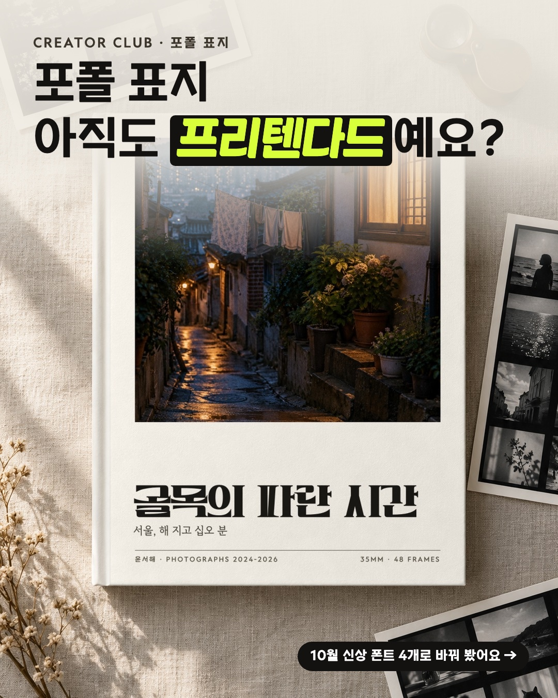
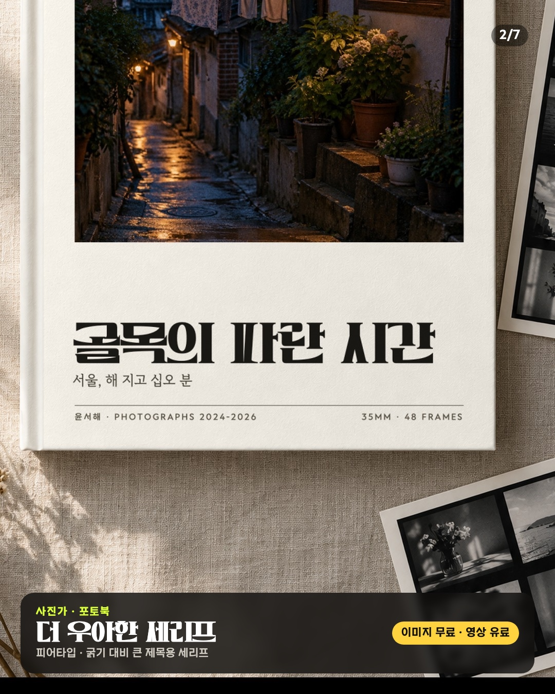
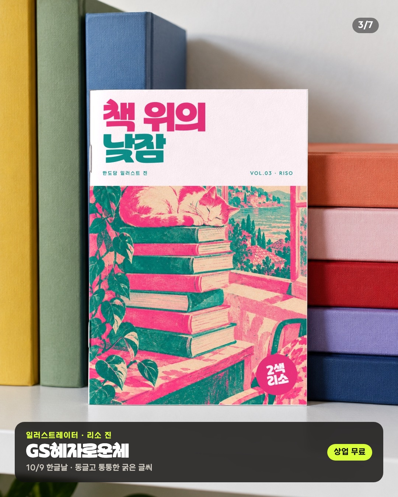
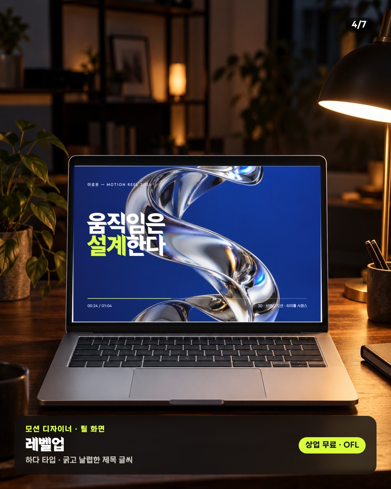
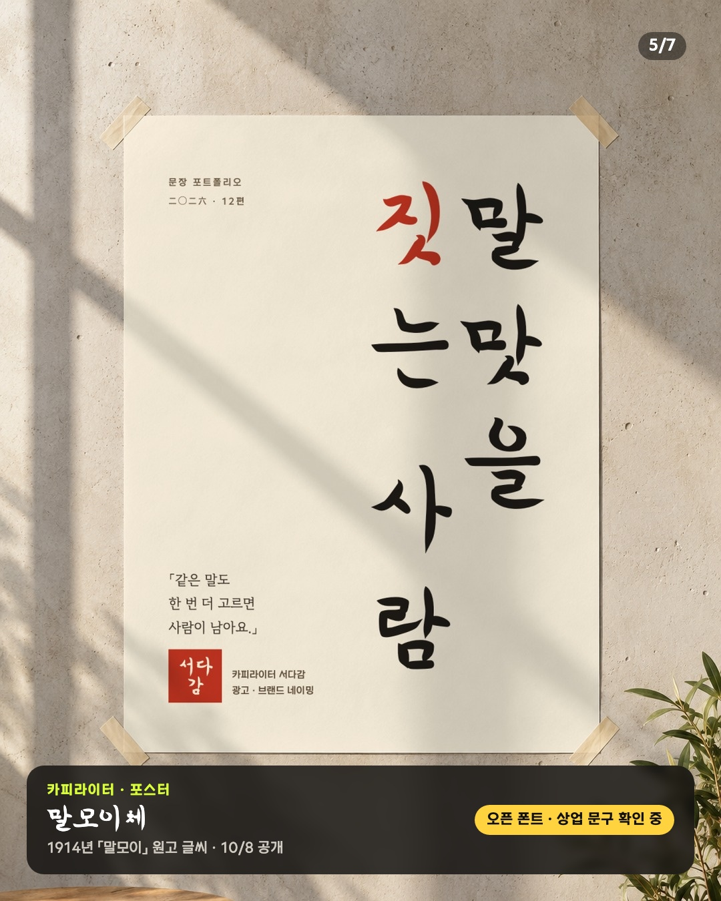
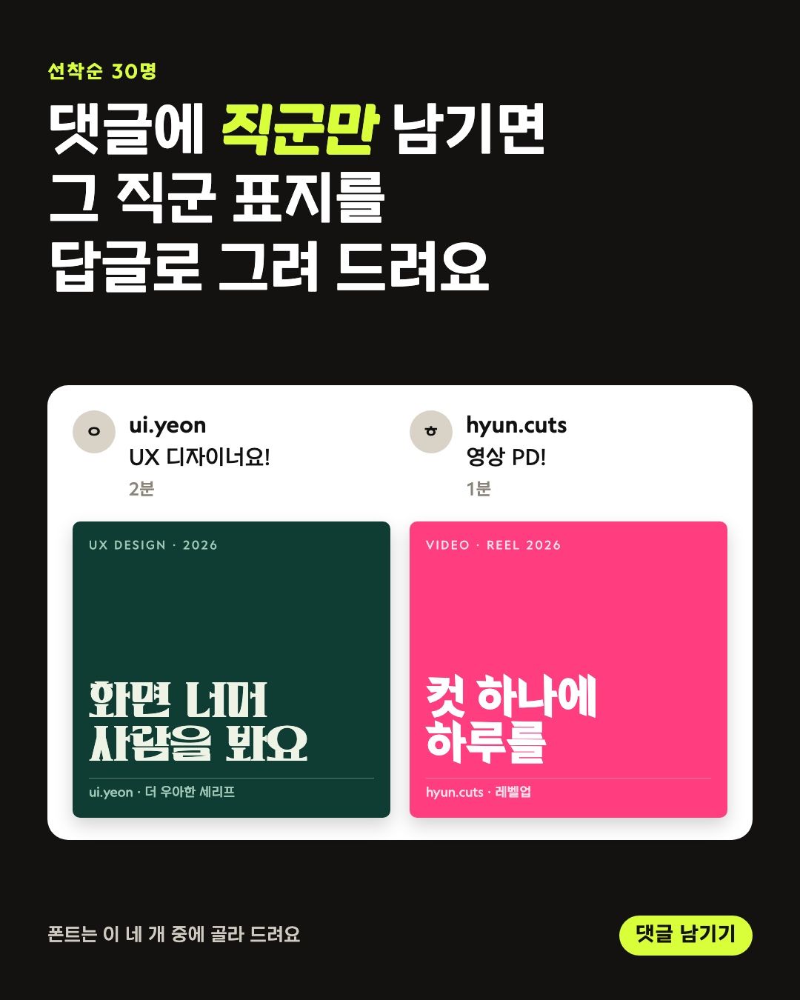
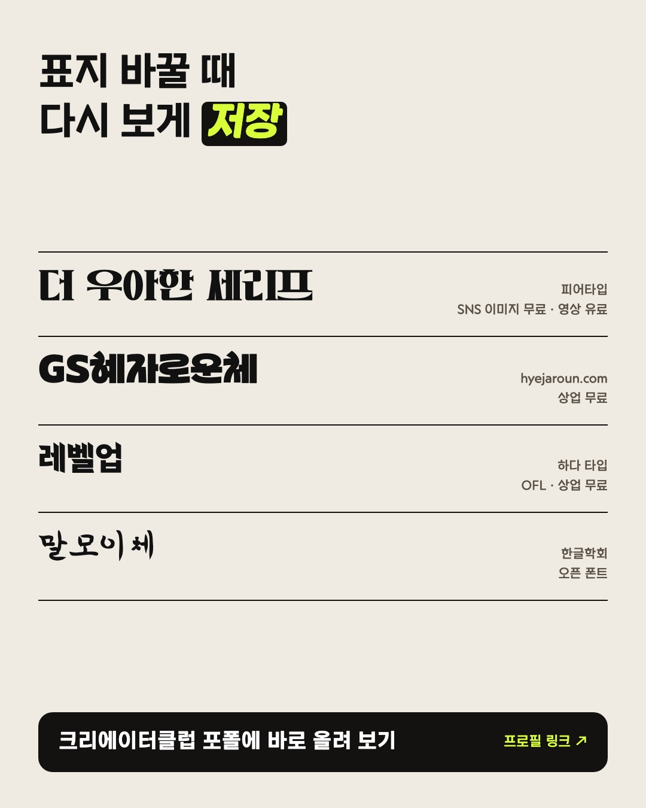
사진을 옆으로 밀면 7장을 넘겨 볼 수 있어요
판정자 셋이 22장을 모두 열어 상위 5개를 골랐어요. 이 첫 장은 첫 판정에서 4위·3위·2위, 다시 섞어 본 판정에서 2위·2위·2위였어요. 1위는 매번 노트폴리오 폰트 큐레이션(크롬 손글씨 + 사진)이었어요. 넘으려면 그 수준의 재질 실험이 한 단계 더 필요해요.
훅(0~2초) → 사진책 · 리소 진 · 노트북 · 포스터를 1.3초씩, 컷마다 폰트 이름을 띄워요 → 마지막 1.5초에 「댓글에 직군만 남기면 표지를 답글로」. 반응 큰 게시물 중 댓글 300개가 넘은 여섯 개는 모두 첫 장이 영상이었어요.
첫 판정에서는 피드 4:5로 잘릴 때 훅 문구가 위로 잘려 셋 다 5위 밖이었어요. 문구를 아래로 내려 다시 뽑고 새로 섞어 판정했더니 셋 다 2위였어요(1위는 셋 다 노트폴리오 폰트 큐레이션).
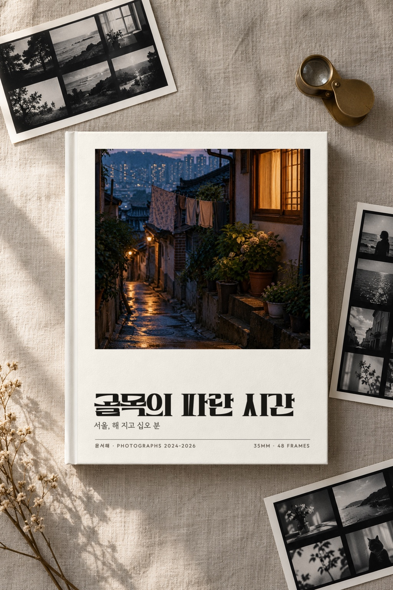
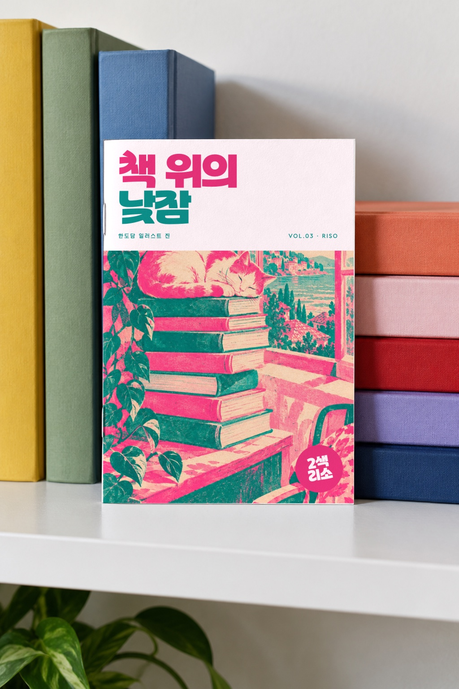
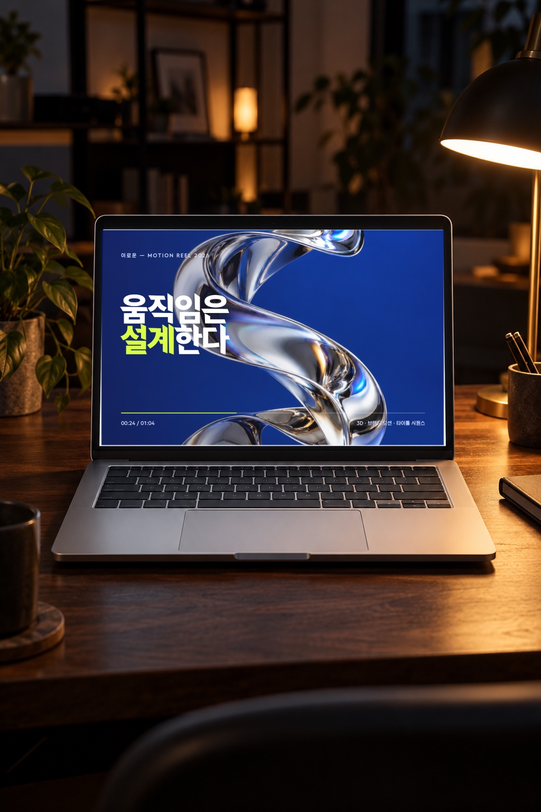
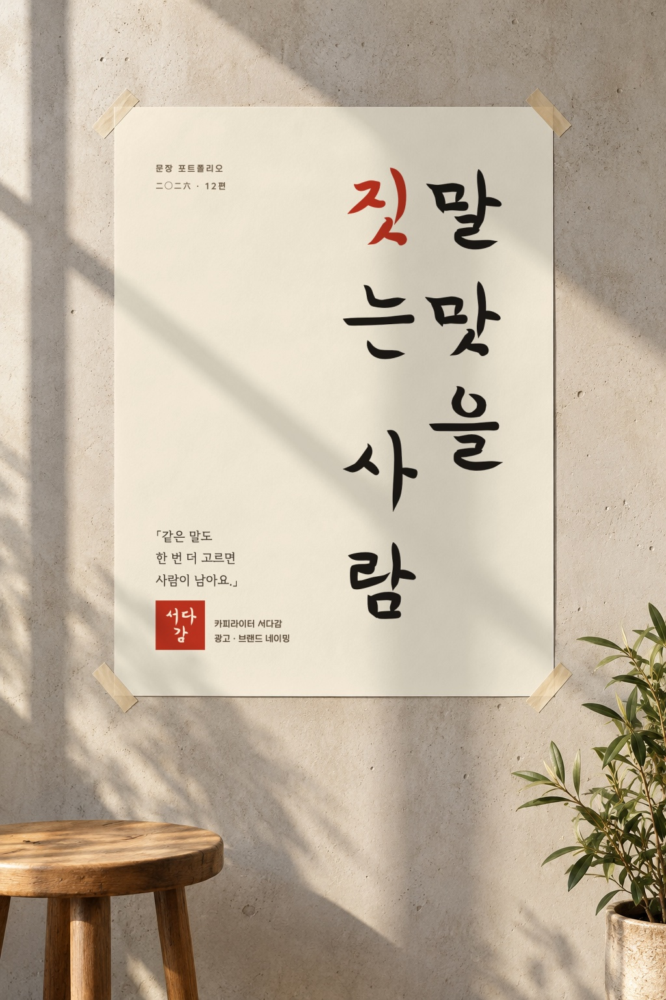
지난번 스레드 안은 「뭘 보여 준 건지 모르겠다」였어요. 이번엔 글을 세 줄로 줄이고, 실물 장면 네 장을 세로로 크게 먼저 띄워요. 폰트 이름은 첫 답글로 내리고, 답글로 직군을 받아요. 스레드 판정은 따로 돌리지 않았지만, 첫 그림 네 장은 판정을 통과한 캐러셀과 같은 장면이에요.